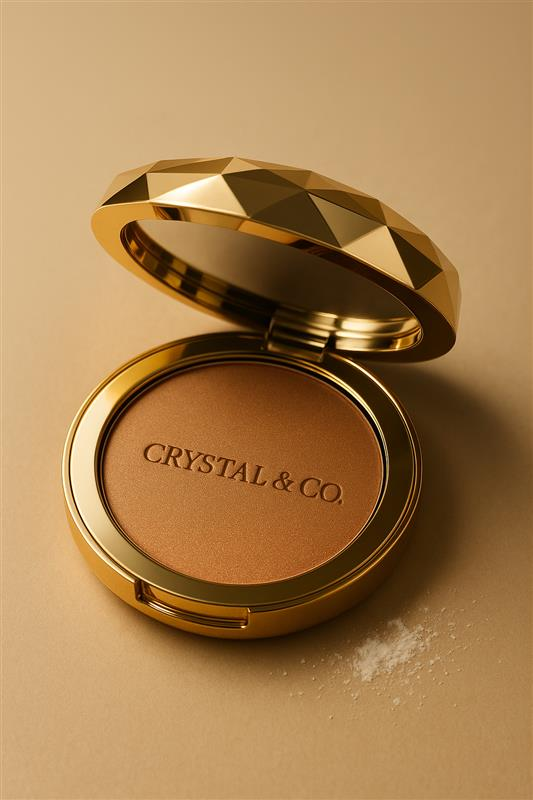

Blush Rosé Glow
Ein sanfter, langanhaltender Rouge-Ton für einen frischen, natürlichen Look.
Preis: 14,99 CHF
Blush richtig auftragen
- Wie finde ich die richtige Stelle?
Lächle leicht, um den höchsten Punkt deiner Wangenknochen zu sehen. Dort setzt du den Pinsel an. - Auftragen mit der richtigen Technik:
Lifting-Effekt: Trage den Blush auf den Wangenknochen in Richtung Schläfe auf.
Apfelbäckchen-Look: Lächle und trage ihn auf die „Äpfelchen“ deiner Wangen auf für einen frischen Look. - Verblenden:
Verblende mit sanften, aufwärts gerichteten Bewegungen. Wenn du keinen Pinsel hast, kannst du (mit sauberen Händen!) den Finger verwenden. - Intensität anpassen:
Für ein zartes Ergebnis weniger Produkt verwenden, für mehr Ausdruck Farbe schichtweise aufbauen.
💡 Tipps:
- Für lange Gesichter: Blush waagrecht auftragen, um sie optisch zu verkürzen.
- Für eckige Gesichter: Weiter oben in Richtung Schläfe auftragen für weichere Züge.
- Für trockene Haut: Creme- oder Flüssigrouge verwenden.
- Für ölige Haut: Puderrouge ist besser geeignet.
- Verwende etwas Blush auf Lippen und Nasenrücken für einen frischen, harmonischen Look.